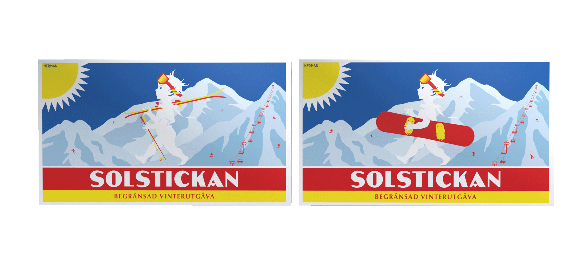
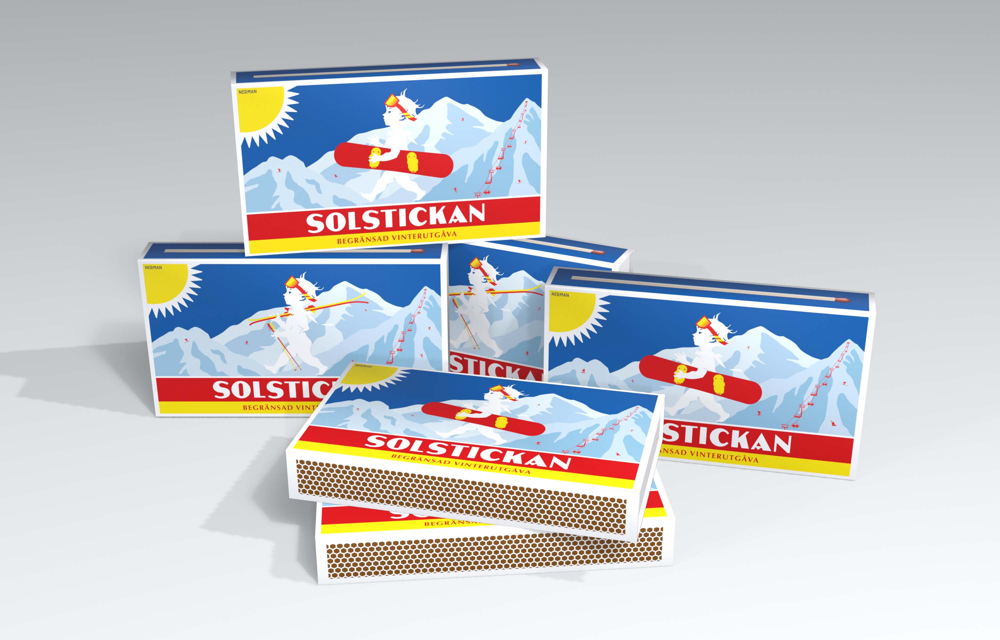
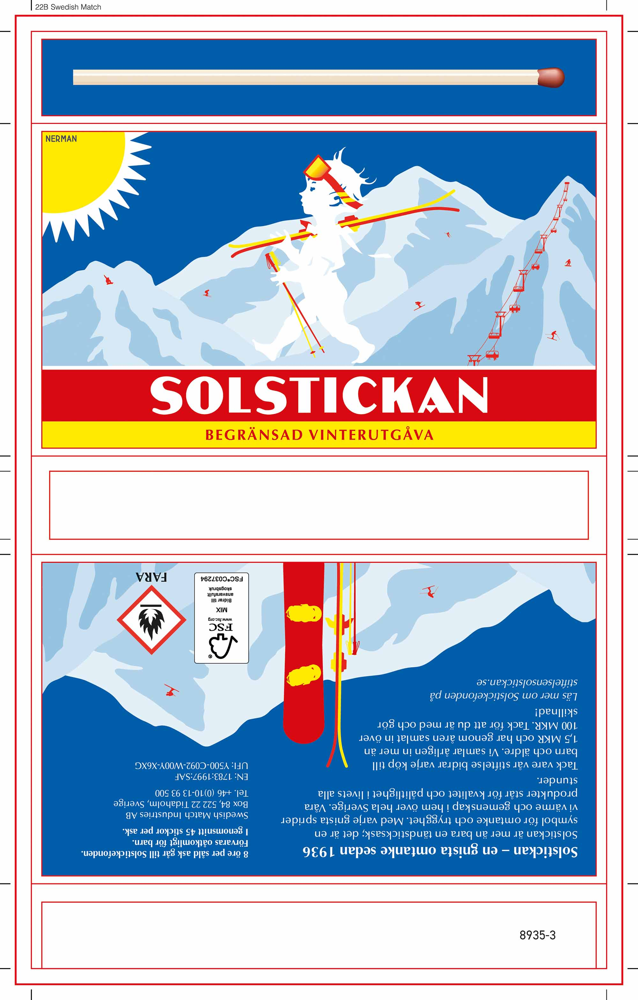
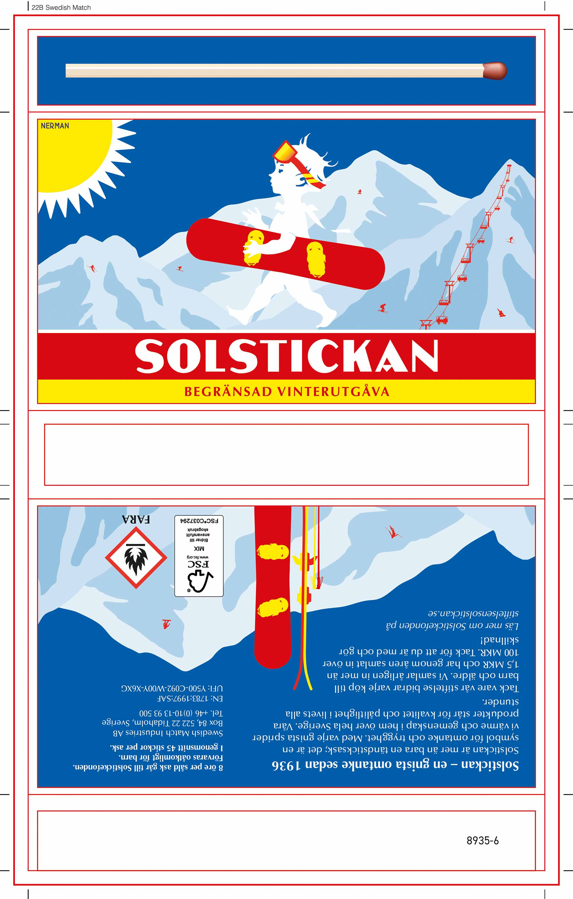
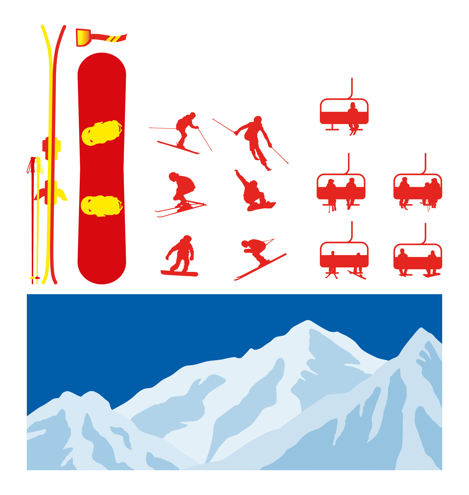
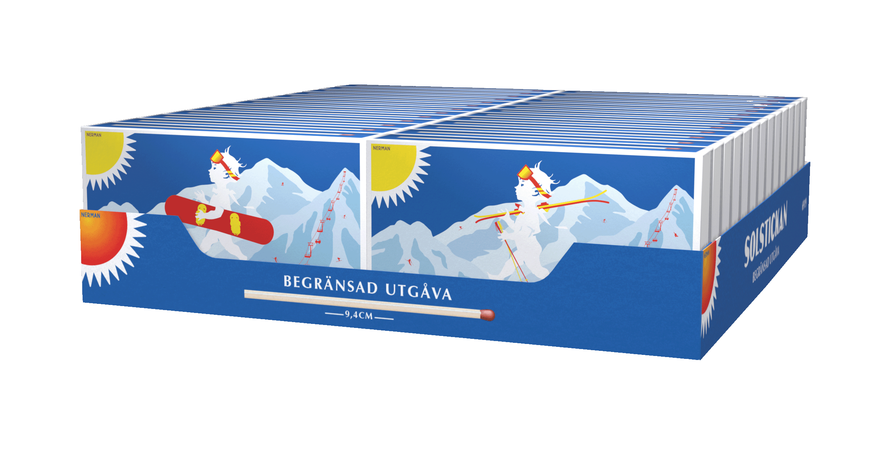
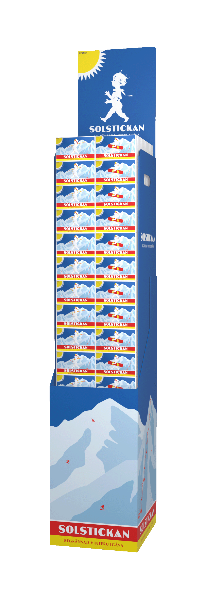
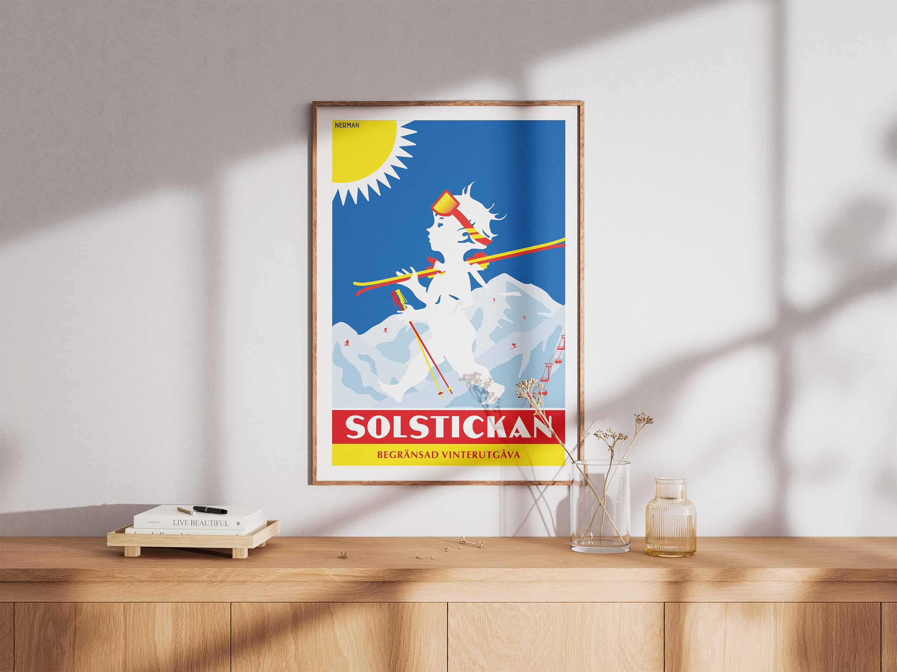

Solstickan vinter 2026
vad
Vinterask för Solstickan
när
2026
målgrupp
Tändstickskonsumenter
I början av 2026 var det dags att börja tänka på nästa vinters limited edition-ask för Solstickan. Vi hade haft en röd, ganska julig ask två vintrar i rad, och säljarna ville nu ha något som var vintrigt men inte juligt, och som funkade att sälja som 2-pack. Som ensam formgivare i projektet började jag genast jobba.
Resultatet blev en serie som jag kallar “Solstickan ski trip”. På dessa askar har jag tagit den klassiska Solstickan-asken och lagt till berg, skidåkare och skidutrustning, i syfte att skapa något nytt som ändå ligger nära det för konsumenterna välbekanta. Serien består till synes av två olika motiv, men tittar man närmare ser man att det egentligen är sex stycken motiv. Denna lilla variation har egentligen inget annat syfte än att vara en kul grej, och förhoppningsvis är det någon som faktiskt lägger märke till det.
Utmaningen i det här arbetet var framförallt den tekniska biten. Förutom att hitta rätt stil för designen, så har mycket tid gått åt till de olika detaljerna. Alltifrån att försöka skapa en enkel men realistisk skildring av en snowboard, till att få de mörkare partierna av bergen att ligga precis rätt, till att skapa de små skidåkarna, till att lyckas få innehåll och bakgrund att samspela på baksidan… Men till slut hittade jag, i samråd med mina kollegor, rätt, och de färdiga askarna tror jag kan bli något som lever kvar även efter att de slutat säljas.
För dessa askar tog jag även fram tråg och display. Det blev även en poster för skojs skull.







